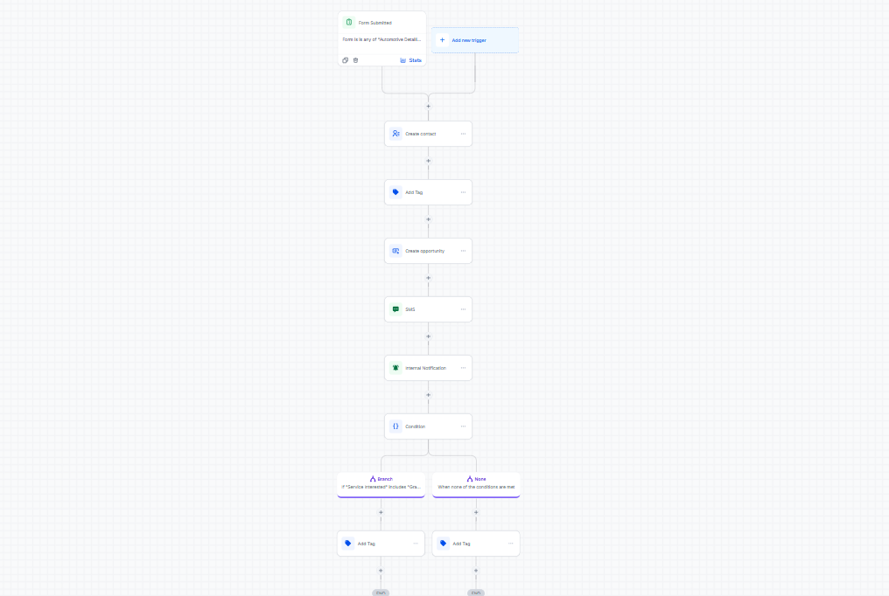
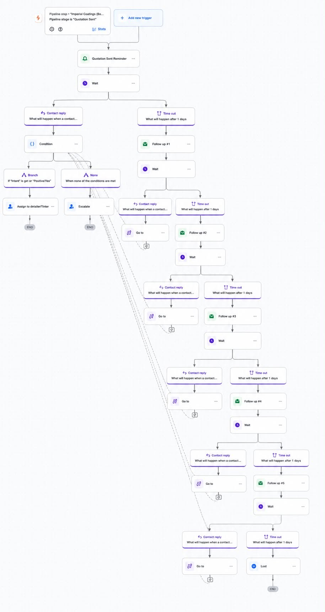
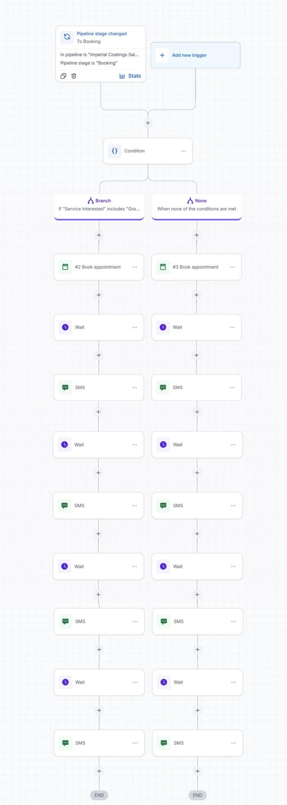
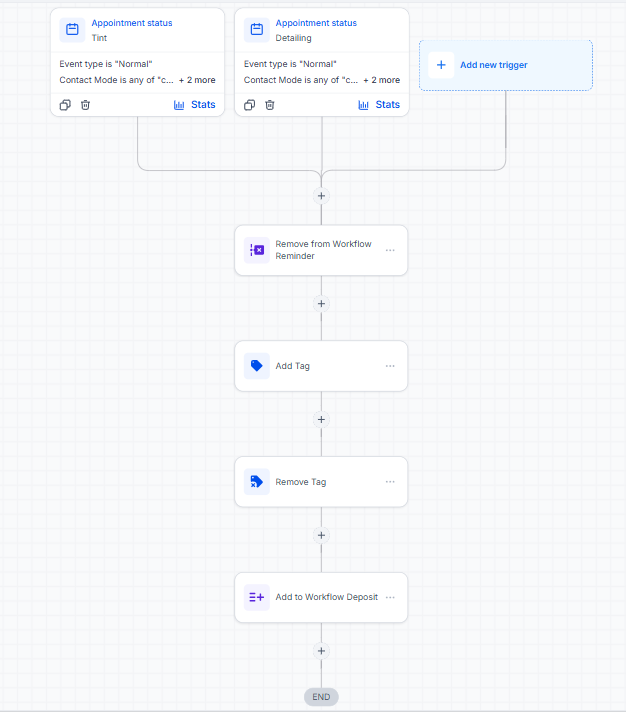
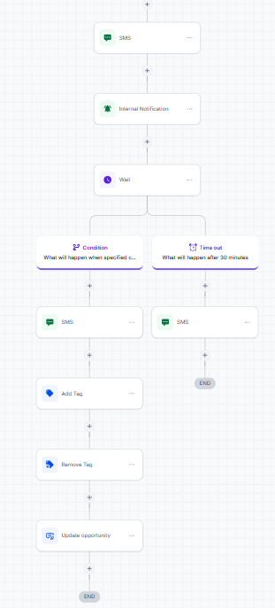
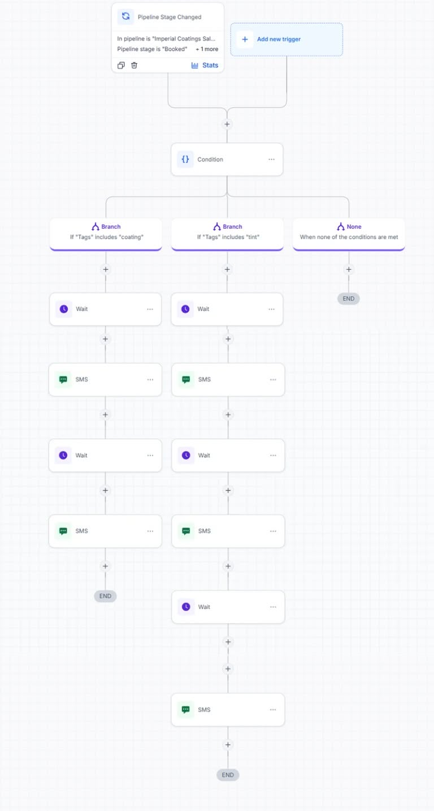
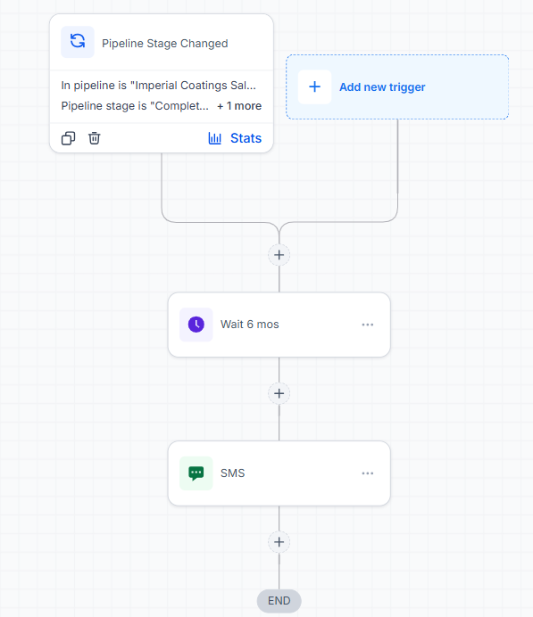

GHL Auto Detailing & Tint Business Automation
A GoHighLevel automation system designed for an auto detailing and window tint business. The setup manages the complete customer journey from initial inquiry and quotation follow-up to booking, deposit collection, appointment reminders, and long-term maintenance follow-up.
Overview
This project is a GoHighLevel CRM and workflow automation setup designed to organize and automate the customer journey for an auto detailing and window tint business.
The system begins when a potential customer submits an inquiry through a custom website form. The form creates the contact, applies the appropriate service tags, and sends an SMS acknowledgement.
From there, automated workflows manage quotation follow-ups, booking reminders, appointment confirmation, deposit requirements, appointment reminders, and recurring maintenance notifications. Human interaction is retained where necessary, particularly for quotation handling and staff assignment.
Project Information
Automation Developer
Workflow Architect
CRM Automation System
Automotive Service Workflow
GoHighLevel
CRM & Workflow Automation
Technologies & Tools
Challenges & Solutions
Managing New Customer Inquiries
Challenge: New inquiries needed to be organized quickly while identifying which automotive service the customer was interested in.
Solution: Built a website form integration that automatically creates the contact, applies service-specific tags, and sends an SMS acknowledgement after submission.
Maintaining Consistent Quotation Follow-Up
Challenge: Potential customers who received quotations could become inactive, requiring staff to manually remember when and how often to follow up.
Solution: Created a five-step follow-up workflow with escalating follow-up intervals. A separate branch handles positive replies and assigns the lead to an appropriate staff member.
Recovering Customers Who Do Not Complete Booking
Challenge: Customers who proceed toward booking may fail to confirm their appointment, resulting in lost opportunities.
Solution: Implemented a dedicated booking reminder workflow that sends four follow-ups with escalating time intervals when the customer does not confirm their appointment.
Managing Appointment Confirmation and Deposits
Challenge: A booked appointment still required a downpayment to secure the customer's slot. Customers who failed to provide the required payment needed to be handled separately.
Solution: Built separate booking confirmation and deposit workflows. A timeout is applied to customers who do not provide the required downpayment, after which they are required to rebook.
Reducing Appointment No-Shows
Challenge: Customers may forget their scheduled appointment, especially when the booking occurs several days before the actual service.
Solution: Added automated appointment reminders that send a gentle reminder a few hours before the appointment, followed by additional post-appointment communication.
Automating Long-Term Customer Maintenance
Challenge: Coating customers may require periodic maintenance, but manually tracking when each customer is due can result in missed opportunities.
Solution: Created a maintenance coating workflow that automatically sends a reminder six months after the customer's coating service.
Architecture & System Design

New leads enter the system through a custom website form. The workflow creates the contact, applies the necessary service tags, and sends an SMS acknowledging the inquiry.

After a quotation is manually sent, the workflow performs up to five follow-ups if there is no response. A positive reply branches into a staff assignment workflow.

Customers who proceed toward booking receive an appointment-related message. Four follow-ups are triggered if the customer does not confirm their selected slot, using escalating time intervals.

Once the customer successfully books an appointment, the contact is automatically moved into the booking confirmed stage for the next part of the customer journey.

A required downpayment is used to secure the customer's appointment. A timeout is applied when the payment is not received, requiring the customer to rebook their appointment.

After the booking is successfully secured with the required downpayment, automated reminders are sent a few hours before the appointment, followed by additional post-appointment reminders.

Customers who have received a coating service are automatically followed up after six months with a maintenance coating reminder.